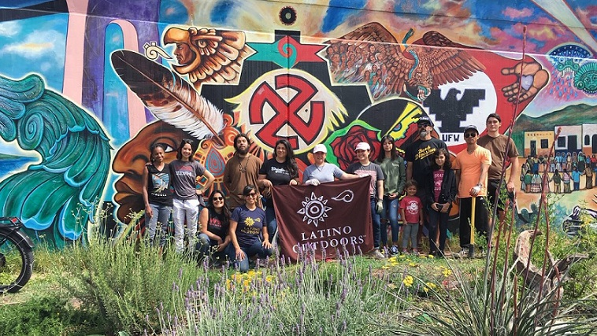

Chicano Park Steering Committee
P.O. Box 131050
San Diego, Ca. 92170
(619) 994-1345
CPSC BOARD MEMBERS:
Chair Por Vida: Tommie Camarillo
Chair: Lucas Cruz
Vice-Chair: Tonatzin 'Cina' Sanchez
Secretary: Jessica Petrikowski
Treasurer: Isabel Sanchez
Sgt-at-Arms: Joe Le Blanc
TOURS:
Please email:
Social Media:


FREE Public Wi-Fi Available in Chicano Park, Select Network'SDAccess4All'
CPSC monthly meetings, open to all (but only members vote), are held on the 4th Sunday of the month, 3pm, at the Kiosco (or in cold/inclement weather indoors at the Chicano Park Museum & Cultural Center (CPMCC)). Next meeting will be held on Sunday February 26, 2023, 3pm in the Chicano Park Museum & Cultural Center (enter through door facing Kiosco, not National Ave).
53rd Chicano Park Day, Sat. April 22,2023, 10am-5pm

The 53th Chicano Park Day commemoration will be held on Saturday, April 22, 2023 from 10am to 5 pm. This family event is free and open to the public. The theme for the 53rd Chicano Park Day commemoration is "Chicano Park Day 53: Kindling the New Fire". This year's poster artwork was created by CPSC Secretary, Jessica Petrikowski. Thank you to all who submitted sketches for consideration! There were so many fantastic sketches, we hope to showcase all submitted artwork at Chicano Park Day. Since this will be the first Chicano Park Day in person in three years, we are moving forward first with those were confirmed for the 50th Chicano Park Day (2020). For car show participants: if you paid and were confirmed, but now have a different car to exhibit, please contact German Sandoval (619) 507-4850. For vendors: if you paid and were confirmed for a spot, please contact the CPSC (Email or call Lucas Cruz at 619-994-1345 (Mon-Sun, 12-5pm please)) with your 2020 invoice and/or confirmation.
CHICANO PARK DAY FUNDRAISERS:
Sunday, March 19th, 12-4pm, $25, hosted by the Cordero familia and Saturday, April 8th, 3-8pm, Chicano Art Gallery Art Fundraiser, Nando's Garage. Thank you to CPSC members Consuelo Manríquez, Cesar Castañeda, and Erik de la Rosa (Sholove)


Every year the community of Logan Heights, the greater community of San Diego and gente throughout the Southwest and across the U.S., gather to commemorate the takeover of Chicano Park on the Saturday closest to April 22nd. Chicano Park has been listed on the Historical Landmarks Registry, (San Diego Historical Resources Board) since 1980,California Register of Historical Resources since 1997, officially listed on the National Register of Historic Places on January 23, 2013, and designated a National Historic Landmark on December 23, 2016.
Grand Opening of the Chicano Park Museum and Cultural Center (CPMCC)
Saturday, October 8, 2022 was the grand opening of the long-awaited Chicano Park Museum & Cultural Center! The event included the inaugural exhibition 'PILLARS: Stories of Resilience and Self-Determination," a collective historical narrative of Chicano Park and Logan Heights, Turning Wheel bus, a muralists symposium, performances in the community room, danza, mariachi, teatro & musica on the Kiosco. The Museum is open Friday to Sunday, 11am to 5pm. More information available on the CPMCC website. and Instagram
Chicano Park Vive! 2022
The Chicano Park Steering Committee, Turning Wheel Project, and Chicano Park Museum & Cultural Center hosted a second summer of Chicano Park Vive!, including the 2nd annual Chicano Park Scholarship. Thanks to the San Diego Foundation, the volunteers, participants, and all the community who joined us for Mujeres de la Revolución, Danza Mexicayotl & local danza community ceremony, Mochilatón/backpack giveaway, and Youth Day, the final event that featured Aztlan bike club, art activities, free food, free books, storytime with San Diego Libros and music by Carnalismo, Mariachi Torres, La Orquesta Mágica.
Luna Carpio, Izel Garcia, Valerie Ruiz, Rogelio 'Roger' Perez, and Pedro Joaquin Esquivias Aguayo were awarded laptops and Jacqueline De Anda received top cash prize for her prose. Thank you to all the Chicano Park Scholarship participants and their creative, thoughtful submissions! Thanks to Jessica Petrikowski for Chicano Park Vive! graphics.


Brown Image Mural unveiling celebration was held on June 25,2022


The Spirit of Chicano Park/ El Espiritu del Parque Chicano
A new bilingual children's book by Beatrice Zamora with illustrations by Maira Meza. Available in hardback and paperback from Tolteca Press. Proceeds go to the Chicano Park Steering Committee and the Chicano Park Museum and Cultural Center. Interview with author Bea Zamora


Secretary of the Interior,Deb haaland Visits Chicano Park

Deb Haaland, the 34th Secretary of the Interior, visited Chicano Park on September 28, 2021, tweeting 'During my visit to Chicano Park in California last week, I was reminded that art, like nature, is everywhere. Murals and sculptures like these create space for community while honoring cultural heritage.'
California funding for Chicano Park Mural Restoration and Chicano Park Museum & Cultural Center
Assemblywoman Lorena Gonzalez, Chicano Park muralists and representatives of the Chicano Park Steering Committee announced Friday, July 16, 2021 that $7.5 million will go toward the museum at Chicano Park (CPMCC) and $2.5 million will fund Chicano Park mural restorations. Photo: Assemblywoman Lorena Gonzalez, muralist Berenice Badillo (her mural is backdrop), and CPSC members Diane, Josie, Tommie, Annie, Rocky, and Isabel.

Thank you to tour guide coordinator, Dr. Alberto Pulido, and all our volunteer tour guides and all the students, teachers, community members, and numerous other visitors from far and wide who take part in learning about Chicano Park's history and monumental murals.
Chicano Park Herb Garden
The Chicano Park Herb Garden is a collective community herbal garden for healing, restoring, learning, working and playing. Firmly rooted in the park's history, the garden is a testament to the vision and resolve of the Barrio Logan community. Established in 2015, the garden is the realization of a need to create safe, healthy, and open spaces for local families and visitors alike. Environmental Health Coalition (EHC), a non-profit organization fighting social and environmental justice in the region's low-income communities of color for more than 39 years, had been listening to community request for such a garden space in the park. The land parcel for the garden project is located next to the cactus garden adjacent to 'Return of Quetzalcoatl' mural. An active group of volunteers ranging from Barrio Logan community members, local business owners, area organizations, college/universities, and local K-12 schools, to people just walking by and lending a hand, maintain the Chicano Park Herb Garden. While EHC serves as a co-sponsor and coordinator of the space, the CPSC oversee all aspects of the park.
During the spring and summer, EHC coordinates free public events at the garden so community members can learn about gardening, soil amending, green spaces, and how building open spaces like the herb garden connects community members to each other, the natural world, and to environmental justice. The Chicano Park Herb Garden is a work in progress, constantly evolving in the hands of dedicated caretakers such as Jiapsi Gomez and the Gohlke family. A new mural project is currently underway, and if approved, will be the biggest in the park. This new mural's title, "Haawka: May the Fire in Your Heart Burn Bright" -- is a traditional Kumeyaay greeting. It represents the history of the Kumyaay, indigenous people of Southern and Baja California. True to the vision behind the Chicano Park Herb Garden, the mural presents visitors with an invitation to experience the community garden and live life in harmony with nature. EHC looks forward to sharing the mural with the community. Jorge Gonzalez is the Barrio Logan Organizer with EHC. If you are interested in volunteering or a group visit, please email him at JorgeG@environmentalhealth.org
Chicano Park approved for National Historic Landmark status
U.S. Secretary of the Interior Sally Jewell announced the designation of 24 new National Historic Landmarks on January 11, 2017 (December 23, 2016 officially approved). Chicano Park is among those sites. "On April 22, 1970, community residents occupied Chicano Park in San Diego, California, in an ultimately successful effort to prevent the construction of a California Highway Patrol substation on land where the City of San Diego had promised the neighborhood a community park. Representative of the Chicano Civil Rights Movement, Chicano Park has become a cultural and recreational gathering place for the Chicano community and is the location of the Chicano Park Monumental Murals, an exceptional assemblage of master mural artwork painted on the freeway bridge supports." Read complete press release here. Chicano Park has been listed on the California Register of Historical Resources since 1997 and was officially listed on the National Register of Historic Places on January 23, 2013.
Tommiie Camarillo Day at San Diego City Council, Sept.20,2016
Councilman David Alvarez on behalf of the San Diego City Council proclaimed September 20, 2016 to be Tomasa 'Tommie' Camarillo Day
.."WHEREAS, Tommie Camarillo has been a faithful steward and protector, dedicated to her love for a park that serves as a cultural anchor and symbolizes the importance of struggle, sacrifice, and equality; and..." (part of the proclamation)


Congratulations to Chunky Sanchez
2013 NEA National Heritage Fellow!
National Endowment for the ArtsThe community also celebrated the dedication of the Ramon "Chunky" Sanchez auditorium and mural unveiling (artwork by Sal Barajas & Francisco Contreras) at King Chavez Neighborhood of Schools, 415 - 31st St, San Diego 92102 on Wednesday, June 12, 2013.
"San Diego Musician Ramon "Chunky" Sanchez honored locally, nationally Katie Euphrat,KBPS, June 12, 2013:KPBS Articles
NEA National Heritage Fellowships Concert was held on September 27 at Lisner Auditorium, George Washington University and the awards ceremony on September 25! For those of us not in Washington DC this week, the NEA streamed the concert live on its website:art.gov
Chicano Park was founded on April 22, 1970 when the community of Logan Heights and Chicano movement activists joined forces to protest the construction of a California Highway Patrol station on the present site of the park. The CHP office was at the time the final insult to a community that had already been degraded by the demolition of hundreds of homes to make way for Interstate 5, the construction of the Coronado Bridge, the placement of toxic industries & junkyards, lack of community facilities, proper schools, jobs, social or medical services.
Protesters led by the Brown Berets, community activists, artists, M.E.Ch.A. and others took over the site and faced police and bulldozers for days while negotiations took place that resulted in the land being given over for a community park. In the following days and months similar actions by the same groups led to the forming of a Chicano Free Clinic, now known as the Logan Heights Family Health Center, and the Centro Cultural de la Raza in Balboa Park.
The struggle for Chicano Park came to symbolize the Chicano Mexicano people's struggle for self-determination and self-empowerment. The murals in the park painted by Chicano artists such as Victor Ochoa, Mario Torero ,Yolanda Lopez ,José Montoya , Sal Barajas, Juanishi Orosco, Berenice Badillo, Carmen Linares and many others portray the social, political and cultural issues that form the struggle for the liberation of Chicano Mexicanos.
Chicano Park has received international recognition as a major public art site. Since 1980, the Park has been listed on the Historical Landmarks Registry (San Diego Historical Resources Board), since 1997 on the California Register of Historical Resources. In addition, Chicano Park was officially listed on the National Register of Historic Places on January 23, 2013, and was recently designated a National Historic Landmark on December 23, 2016.
Every year the community of Barrio Logan, the greater community of San Diego and people throughout the Southwest and across the US come together to celebrate the takeover of Chicano Park.